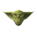
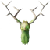

Troféer
Troféer i Valheim – 67 föremål med biom, fyndplats, verktyg som krävs, recept och användning.
Inget föremål hittades.
 Askgamstrofé
Askgamstrofé
Som en vanlig gam, men återfinns i vulkaniskt klimat.
Så får du det
- Släpps av: Askgam · Askland · 10 % chans
 Asksvinstrofé
Asksvinstrofé
Låt inte det vänliga leendet lura dig, ty det skiljer enkelt din arm från din kropp.
Så får du det
- Släpps av: Asksvin · Askland · 10 % chans
Används till
- Byggmaterial till: Fjäderskrud
 Barka Trophy
Barka Trophy
The frozen head of a once-living tree.
Så får du det
- Släpps av: Barka · Djupaste Norden · 10 % chans
 Bensjöodjurstrofé
Bensjöodjurstrofé
En skalle av purhårt ben, lika farligt som det är skyddande.
Så får du det
- Släpps av: Bensjöodjur · Askland · 33 % chans
 Björntrofé
Björntrofé
That stare is still frightening...
Så får du det
- Släpps av: Björn · Svarta Skogen · 10 % chans
Används till
- Ingrediens i: Bronze Pendant, Headdress of the Bear
- Byggmaterial till: Björnmatta
 Blobb-trofé
Blobb-trofé
En stinkande klump med kladdig materia.
Så får du det
- Släpps av: Slemhög · Träsk · 10 % chans
- Släpps av: Blobb · Träsk · 10 % chans
Används till
- Ingrediens i: Slemhög på flaska, Slemhög på flaska
 Brenna-trofé
Brenna-trofé
Brinner ännu på något vis.
Så får du det
- Släpps av: Brenna · Svarta Skogen
 Den Uråldriges huvud
Den Uråldriges huvud
Det avkapade huvudet osar av kraft. Häng upp det på en sten i cirkeln.
Så får du det
- Släpps av: Den Uråldrige · Svarta Skogen
 Drakhuvud
Drakhuvud
Fortfarande kall att vidröra.
Så får du det
- Släpps av: Drake · Berg · 10 % chans
Används till
- Ingrediens i: Drakhjälm, Frostigt fiskbete, Isblobb på flaska
 Draughuvud
Draughuvud
Bind för munnen om den börjar viska i natten...
Så får du det
- Släpps av: Draug · Äng, Träsk · 10 % chans
 Draugkämpes huvud
Draugkämpes huvud
Dess döda, rött skinande blick ger dig kalla kårar.
Så får du det
- Släpps av: Draugkämpe · Äng, Träsk · 10 % chans
- Slå sönder: By i norr · 5,3 % chans
Används till
- Ingrediens i: Järnslägga
 Drottningstrofé
Drottningstrofé
Hon har sett nog.
Så får du det
- Släpps av: Drottningen · Dimmornas Dal
 Dvärgatrofé
Dvärgatrofé
Det är faktiskt lite oroande att du ens överväger tanken att hänga den på väggen...
Så får du det
- Släpps av: Trolldvärger · Dimmornas Dal · 5 % chans
- Släpps av: Väktardvärger · Dimmornas Dal, Askland · 5 % chans
- Släpps av: Imprisoned Dvergr · Djupaste Norden · 5 % chans
 Eiktyrs huvud
Eiktyrs huvud
Det avkapade huvudet osar med kraft. Häng upp det på en sten i cirkeln.
Så får du det
- Släpps av: Eiktyr · Äng
 Elaking Trophy
Elaking Trophy
Mean little eyes stare back at you.
Så får du det
- Släpps av: Elaking · Äng, Svarta Skogen, Träsk, Berg, Slätt, Dimmornas Dal, Askland, Djupaste Norden, Hav · 10 % chans
 Eyeless One Trophy
Eyeless One Trophy
Getting slashed by these claws would be very unpleasant.
Så får du det
- Släpps av: Eyeless One · Djupaste Norden · 10 % chans
 Faders trofé
Faders trofé
Den gröna draken, förvriden bortom räddning. Häng upp det på en sten i cirkeln.
Så får du det
- Släpps av: Fader · Askland
 Fenringstass
Fenringstass
Varken ulv och man, dess anlete fruset i en smärtad grimas.
Så får du det
- Släpps av: Fenring · Berg · 10 % chans
Används till
- Ingrediens i: Kallt fiskbete, Wolf Sight
 Fulingkämpes huvud
Fulingkämpes huvud
Det enorma, gråsprängda huvudet är tungt som sten.
Så får du det
- Släpps av: Fulingkämpe · Slätt · 5 % chans
- Slå sönder: By i norr · 1,1 % chans
Används till
- Ingrediens i: Evasion Mantle

FulingshuvudLöst hängande grönaktigt skinn samlat runt ett par mörka, hatiska ögon.
Så får du det
- Släpps av: Fuling · Slätt · 10 % chans
Används till
- Ingrediens i: Bitskt fiskbete
 Fästingtrofé
Fästingtrofé
Det är ju en samtalsstartare...
Så får du det
- Släpps av: Fästing · Dimmornas Dal · 5 % chans
 Gasttrofé
Gasttrofé
Does it still whisper about unfinished business?
Så får du det
- Släpps av: Gast · Svarta Skogen · 10 % chans
 Geirrhafa-trofé
Geirrhafa-trofé
Han stirrar med en isig blick.
Så får du det
- Släpps av: Geirrhafa · Berg
 Gjalltrofé
Gjalltrofé
Med lite tur flyter den inte iväg.
Så får du det
- Släpps av: Gjall · Dimmornas Dal · 30 % chans
Används till
- Ingrediens i: Pulsating Earrings

Grådvärgaschamans huvudDen kan försöka komma tillbaka, så var noga med att beskära alla nya skott...
Så får du det
- Släpps av: Grådvärgsschaman · Svarta Skogen, Djupaste Norden · 10 % chans
Används till
- Ingrediens i: Heart of the Forest
 Grådvärgshuvud
Grådvärgshuvud
Det mossiga, avkapade huvudet från en Grådvärg.
Så får du det
- Släpps av: Grådvärg · Äng, Svarta Skogen, Djupaste Norden · 5 % chans
- Slå sönder: By i norr · 10 % chans
 Grådvärgskämpes huvud
Grådvärgskämpes huvud
Det krävdes sju slag för att hacka loss detta knotiga huvud från sin kropp.
Så får du det
- Släpps av: Grådvärgskämpe · Svarta Skogen · 10 % chans
- Slå sönder: By i norr · 5,3 % chans
 Hartrofé
Hartrofé
Det sägs att de ger tur. Knappast för haren.
Så får du det
- Släpps av: Hare · Dimmornas Dal · 5 % chans
 Havsormshuvud
Havsormshuvud
Fjällen har mattnat något, men ögonen skiner än.
Så får du det
- Släpps av: Havsorm · Hav · 33 % chans
Används till
- Ingrediens i: Fins of Destiny, Tungt fiskbete
 Hexen Trophy
Hexen Trophy
Before her death, her eyes sparked with magic. Now they're empty and void.
Så får du det
- Släpps av: Hexen · Äng, Svarta Skogen, Träsk, Berg, Slätt, Dimmornas Dal, Askland, Djupaste Norden, Hav · 10 % chans
Används till
- Ingrediens i: Cast: Northern Vengeance, Northern Vengeance, Witch Crown
 Igelhuvud
Igelhuvud
Den må vara slemmig, men skinnet är vackert mönstrat i rött och svart.
Så får du det
- Släpps av: Blodigel · Träsk · 10 % chans
Används till
- Ingrediens i: Iron Brooch
 Kadavertrofé
Kadavertrofé
These eyes are finally vacant for good.
Så får du det
- Släpps av: Kadaver · Slätt · 10 % chans
Används till
- Ingrediens i: Vilebone Visage
 Krigartrofé
Krigartrofé
Kraniet är spräckligt med brott, som om det överlevt många slag under årens lopp.
Så får du det
- Släpps av: Svedd krigare · Askland · 5 % chans
Används till
- Ingrediens i: Hett fiskbete
- Byggmaterial till: Grausten Chest
 Krigen Trophy
Krigen Trophy
Once a mighty warrior, now nought but a husk remains.
Så får du det
- Släpps av: Krigen · Äng, Svarta Skogen, Träsk, Berg, Slätt, Dimmornas Dal, Askland, Djupaste Norden, Hav · 10 % chans
 Kultisttrofé
Kultisttrofé
Elden i dess ögon har än inte svalnat.
Så får du det
- Släpps av: Kultist · Berg · 10 % chans
Används till
- Ingrediens i: Fenrishuva
 Kvastur
Kvastur
Häxans bästa vän.
Så får du det
- Släpps av: Kvastur · Träsk
 Lava Blob Trophy
Lava Blob Trophy
It's probably dead, right?
Så får du det
- Släpps av: Lavablobb · Askland · 10 % chans
 Likhögens hjärta
Likhögens hjärta
Ben och trögflytande vätskor, sammahållna av någon osedd kraft. Häng upp det på en sten i cirkeln.
Så får du det
- Släpps av: Likhögen · Träsk
 Moders huvud
Moders huvud
En drakes huvud, majestätiskt även i dödens kalla grepp. Häng upp det på en sten i cirkeln.
Så får du det
- Släpps av: Moder · Berg
 Moose Trophy
Moose Trophy
The mighty ruler of the northern forests.
Så får du det
- Släpps av: Moose · Djupaste Norden · 10 % chans
Används till
- Ingrediens i: Cast: Headdress of the Caller, Cast: Spirit Caller, Headdress of the Caller, Neckstabber, Spirit Caller
- Byggmaterial till: Antler Throne
 Morgenstrofé
Morgenstrofé
Den vakna timmans nattmara har gått mot sitt slut.
Så får du det
- Släpps av: Morgen · Askland · 5 % chans
Används till
- Ingrediens i: Brimstone
 Mördarmyggetrofé
Mördarmyggetrofé
Du gillar inte att vidröra den även i det här tillståndet.
Så får du det
- Släpps av: Mördarmygga · Slätt · 5 % chans
 Mörksuggatrofé
Mörksuggatrofé
En svart och klibbig sörja.
Så får du det
- Släpps av: Mörksugga · Slätt · 10 % chans
Används till
- Ingrediens i: Mörksugga på flaska
 Näckhuvud
Näckhuvud
De små ögonen och sylvassa tänderna vederlägger den lilla ödlans skenbart lugna natur.
Så får du det
- Släpps av: Näck · Äng · 5 % chans
 Oxödlehuvud
Oxödlehuvud
Huvudet från en jättelik best, mattat med tjock päls.
Så får du det
- Släpps av: Oxödla · Slätt · 10 % chans
Används till
- Ingrediens i: De modigas armband, Dimmigt fiskbete
 Prickskyttstrofé
Prickskyttstrofé
Ben som dessa kan hysa oändlig kraft.
Så får du det
- Släpps av: Svedd skytt · Askland · 5 % chans
 Pulp Trophy
Pulp Trophy
Remains of unfortunate adventurers, digested and jellified over time.
Så får du det
- Släpps av: Shapeless Pulp · Djupaste Norden · 10 % chans
Används till
- Ingrediens i: Blob Bomb: Pulp
 Rutten skalle
Rutten skalle
En stinkande, rutten skalle. Du undrar varför du behöll den...
Så får du det
- Släpps av: Härskna kvarlevor · Svarta Skogen · 10 % chans
 Rådjurshuvud
Rådjurshuvud
Ett fint exemplar, men du behöver döda mer än rådjur för att komma in i Valhalla.
Så får du det
- Släpps av: Rådjur · Äng, Svarta Skogen · 50 % chans
Används till
- Ingrediens i: Bockbräckaren, Odens dryckeshorn
- Frammanar bossen: Eiktyr (2 ×)
 Schamanfulings huvud
Schamanfulings huvud
Inte ens döden kunde sudda ut det menande hånleendet från dess läppar...
Så får du det
- Släpps av: Schamanfuling · Slätt · 10 % chans
- Slå sönder: By i norr · 5,3 % chans
 Seal Trophy
Seal Trophy
This animal never did any harm, yet it met an untimely end.
Så får du det
- Släpps av: Seal · Djupaste Norden · 10 % chans
 Skalle
Skalle
Det uttryckslösa leendet på skallen påminner dig om dödens oundvikliga natur.
Så får du det
- Släpps av: Skelett · Äng, Svarta Skogen, Träsk, Berg, Slätt, Djupaste Norden · 10 % chans
Används till
- Ingrediens i: Gravskändarens skalle, Hög bensköld
- Byggmaterial till: Evighetsljus
 Stengolemstrofé
Stengolemstrofé
Den kristallartade stenformationen skulle utgöra en imponerande golvprydnad.
Så får du det
- Släpps av: Stengolem · Berg · 5 % chans
Används till
- Ingrediens i: Crystal Heart
 Storkung Yagluths huvud
Storkung Yagluths huvud
En död kungs okrönta huvud. Häng upp det på en sten i cirkeln.
Så får du det
- Släpps av: Yagluth · Slätt
 Styggelsetrofé
Styggelsetrofé
Död så länge att den åter börjat leva.
Så får du det
- Släpps av: Styggelse · Träsk · 50 % chans
Används till
- Ingrediens i: Klibbigt fiskbete
 Surtlingstrofé
Surtlingstrofé
Omgiven av en blek flamma pyr den fortfarande som ett glödande kol.
Så får du det
- Släpps av: Surtling · Träsk · 5 % chans
Används till
- Ingrediens i: Nimble Anklet
 Sökarsoldattrofé
Sökarsoldattrofé
En stupad krigares huvud.
Så får du det
- Släpps av: Soldatsökare · Dimmornas Dal · 5 % chans
- Slå sönder: By i norr · 5,3 % chans
 Sökartrofé
Sökartrofé
Mindre ömtåliga än man skulle tro. De läderartade vingarna glittrar i eldens sken, som om de mindes de öppna skyarna.
Så får du det
- Släpps av: Sökare · Dimmornas Dal · 5 % chans
Används till
- Ingrediens i: Resounding Shackle
 Thungr-trofé
Thungr-trofé
Inte så tuff längre.
Så får du det
- Släpps av: Zil & Thungr · Slätt
 Trofé av en stupad valkyrja
Trofé av en stupad valkyrja
Död må hon vara, men hon suktar ännu efter blodsutgjutelse.
Så får du det
- Släpps av: Fallen Valkyria · Askland · 5 % chans
Används till
- Ingrediens i: Jörmundling
 Trollhuvud
Trollhuvud
Den läderartade huden bär spår av uråldriga symboler.
Så får du det
- Släpps av: Troll · Svarta Skogen · 50 % chans
Används till
- Ingrediens i: Mossigt fiskbete, Trollstav
 Trollkarlstrofé
Trollkarlstrofé
Ett varmt sken lyser upp från insidan. Hanteras varsamt.
Så får du det
- Släpps av: Svedd trollkarl · Askland · 5 % chans
 Ulvtrofé
Ulvtrofé
En tovig svans från en inte särskilt duktig hund.
Så får du det
- Släpps av: Ulv · Berg · 10 % chans
 Varghuvud
Varghuvud
Frusen i döden, håret mättat med blod och ett tyst ylande fast i dess hals.
Så får du det
- Släpps av: Varg · Berg · 10 % chans
Används till
- Ingrediens i: Vargskinnsmantel
- Byggmaterial till: Rustic Drawbridge
 Vildsvinshuvud
Vildsvinshuvud
Detta vildsvinshuvud skulle utgöra en präktig dekoration i vilket hus som helst.
Så får du det
- Släpps av: Vildsvin · Äng · 15 % chans
 Vålnadsskinn
Vålnadsskinn
En vålnads ömsade skinn; en svepande rock synlig enbart i månljus.
Så får du det
- Släpps av: Vålnad · Träsk · 5 % chans
 Writhan Trophy
Writhan Trophy
Tough dead, it should probably be handled delicately.
Så får du det
- Släpps av: Writhan · Träsk · 10 % chans